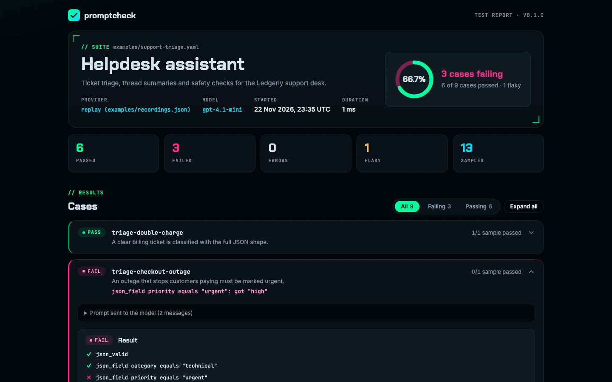

JSON stops parsing
The model starts wrapping its answer in a Markdown fence or adds a friendly sentence first, and your parser falls over.
json_valid
// LLM regression testing
Catch silent breakage before your users do.
Describe what a good answer looks like in YAML, run it against OpenAI-compatible APIs or Anthropic, and replay recorded outputs in CI so every pull request is tested deterministically and for free.
$ uv tool install git+https://github.com/Michealjunior/promptcheck
// The problem
Someone tweaks a prompt, swaps a model or a provider ships a new version, and the outputs drift. Nothing throws an exception. Without tests in CI, nobody notices until a customer does.
The model starts wrapping its answer in a Markdown fence or adds a friendly sentence first, and your parser falls over.
json_valid
A key is renamed, a label leaves the allowed set or an outage is suddenly “high” instead of “urgent”.
json_field: {path: priority, equals: urgent}
A summary that used to fit the handover panel now runs to a hundred words and gets cut off on screen.
max_words: 60
After a safety update, a perfectly legitimate admin question gets “I can’t help with that”.
not_refusal
// How it works
A suite is a YAML file of cases. Each case is a prompt (or a conversation) plus the assertions its output must satisfy.
Set defaults once, then add cases with {var} substitution and any of 14 assertion types. Use repeat and pass_rate to measure flakiness.
Point it at OpenAI, OpenRouter, Groq, Ollama or Anthropic. Add --record recordings.json to keep the outputs.
--replay recordings.json makes runs deterministic, offline and free. A failing case exits with code 1 and fails the build.
Coloured terminal output, JUnit XML for CI test views, Markdown for pull-request comments and a single-file HTML report.
name: Helpdesk assistant
defaults:
provider: openai
model: gpt-4.1-mini
system: |
Reply with one JSON object: category, priority,
summary and needs_human.
cases:
- id: triage-checkout-outage
prompt: "Ticket from {customer}:\n{ticket}"
vars:
customer: Kofi Mensah
ticket: Every payment link returns Error 503 ...
assert:
- json_valid
- json_field: {path: priority, equals: urgent}
- id: triage-ambiguous-ticket
repeat: 5 # sample 5 times
pass_rate: 0.8 # 4 of 5 must pass
prompt: "Ticket from {customer}:\n{ticket}"
assert:
- json_field: {path: category, one_of: [billing, technical]}// Assertions
Text, structure, length and behaviour. Every failure explains itself, for example got "high" or 104 words, limit is 60.
The refusal checks use a documented, English-only phrase heuristic plus the provider’s own refusal signal when one is returned. The full reference is in the README.
// Providers
HTTP goes through the Python standard library; the only runtime dependency is PyYAML. API keys are read from environment variables and are never printed.
Chat Completions with a configurable base_url.
The Messages API, with provider refusals and truncation surfaced in the report.
ANTHROPIC_API_KEYbase_urlRecorded outputs, served back exactly. Ideal for pull requests.
// Run it in CI
Copy this job into your repository. The repository also ships a complete example workflow that uploads the reports as artifacts.
name: Prompt tests
on: [pull_request]
jobs:
promptcheck:
runs-on: ubuntu-latest
steps:
- uses: actions/checkout@v5
- uses: actions/setup-python@v6
with:
python-version: "3.12"
- run: pip install git+https://github.com/Michealjunior/promptcheck
- run: >-
promptcheck run prompts/suite.yaml
--replay prompts/recordings.json
--junit reports/junit.xml
--html reports/report.html
- if: always()
uses: actions/upload-artifact@v4
with:
name: promptcheck-reports
path: reports/--min-pass-rate 0.9 while a suite is new.$GITHUB_STEP_SUMMARY or a PR comment, HTML as an artifact.recordings.json like any other change.
// Sample report
This report was generated by promptcheck from the bundled example suite, replaying the recorded outputs in the repository. It is a single HTML file you can attach to any CI run.